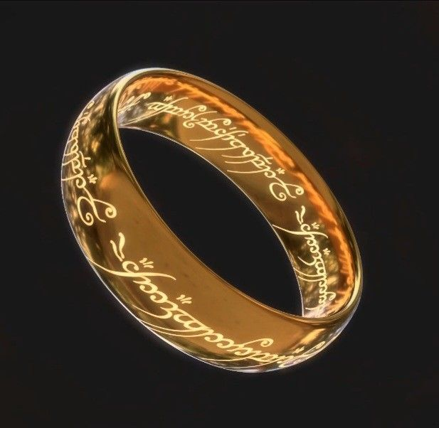

El Anillo Único: La forja del artefacto definitivo de Mordor

De todos los objetos mágicos y reliquias creadas en la Tierra Media, ninguno posee una carga mitológica e histórica tan devastadora como el Anillo Único. Forjado en secreto por el Señor Oscuro Sauron, este objeto no era solo una joya, sino una extensión directa de su propio poder e intenciones de dominación total.
1. La forja en los fuegos del Monte del Destino
Hacia el año 1600 de la Segunda Edad, Sauron se recluyó en las profundidades de la Orodruin (el Monte del Destino). Para lograr controlar los Anillos de Poder que los Elfos habían forjado en Eregion bajo su tutela engañosa, Sauron vertió una inmensa parte de su propia fuerza vital, crueldad y malicia nativa en el oro. Al hacerlo, ligó su propio destino y supervivencia material a la existencia física de la joya.
2. La inscripción en la Lengua Negra
A simple vista, el Anillo parecía una banda de oro puro perfectamente lisa. Sin embargo, al ser sometido al calor intenso, florecía una inscripción grabada en caracteres élficos (tengwar), pero en la temible Lengua Negra de Mordor. La traducción completa, recitada por Gandalf en Rivendell, dice así:
"Un Anillo para gobernarlos a todos. Un Anillo para encontrarlos,
un Anillo para atraerlos a todos y atarlos en las tinieblas."
3. El mecanismo de la corrupción
El poder más insidioso del Anillo no era volver invisible a su portador (lo cual era solo un efecto secundario que arrastraba al individuo al mundo espectral), sino su capacidad para **corromper la mente**. El Anillo poseía una especie de voluntad propia; buscaba constantemente traicionar a sus portadores temporales (como hizo con Isildur o Gollum) para regresar de forma inevitable a las manos de su verdadero Amo. Solo criaturas de naturaleza humilde y sin ambición de poder, como los Hobbits, eran capaces de resistir sus susurros durante periodos prolongados.